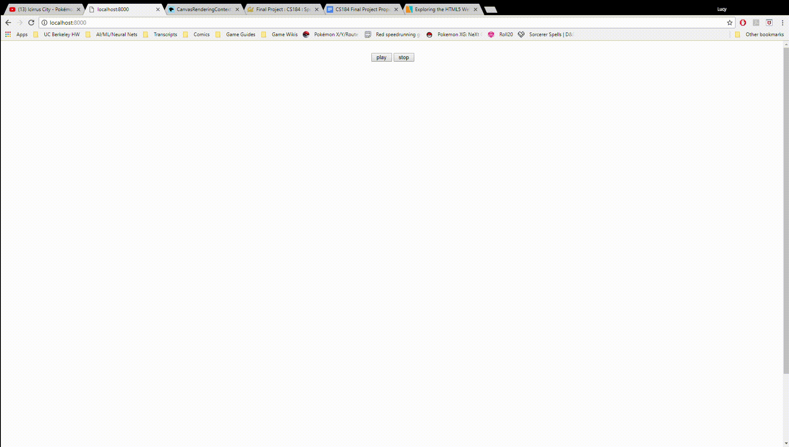

So far, we’ve primarily dealt with processing an input audio signal to generate the frequency data we need to create our visualizer, which we’ve achieved by using the tools provided by the Web Audio API. In particular, API contains two types of nodes that are useful in processing the audio signal: the Channel Splitter Node and the Analyzer Node. We first pass the audio signal through a Channel Splitter Node to extract the signal for the left and right channels. We then pass each channel’s signal through an Analyzer Node, which internally computes the FFT over the signal while leaving the signal unchanged, allowing us to perform signal processing in real time. Finally, we can extract the processed frequency values from the node, which can then be used as the input values for the visualization. Additionally, we can use this same set of frequency data to display the volume, which we treat as the strength of the audio signal. We can determine the strength of the signal by averaging over the extracted frequencies in each time block, which we’ve presented here as a simple set of bars that vary in real-time with our computed signal strength. We currently display in the simple visualization below:
While we haven’t yet done as much on the graphical portion of the music visualizer as we were originally planning to, the audio processing is essentially complete, though we may consider also extracting volume-based information (which can be done using the frequency data we already have). As such, we will be heavily focusing on further developing the complexity and aesthetics of our visual representation in this upcoming week.
Link to presentation slides: CS 184 Final Project Milestone Slides